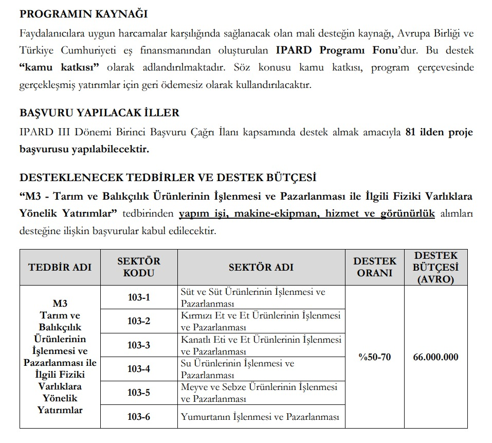
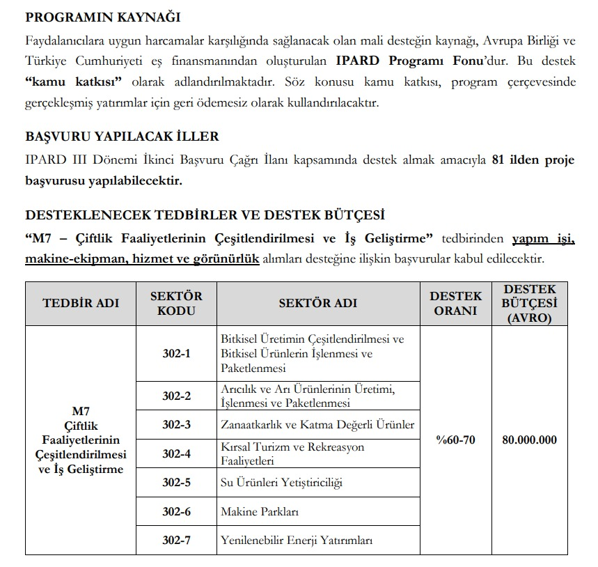

Aslan Teşvik Danışmanlık olarak, kırsal kalkınma ve tarımsal gelişim alanlarında faaliyet gösteren işletmeler için önemli bir finansman kaynağı olan IPARD destekleri konusunda uzman danışmanlık hizmetleri sunuyoruz. IPARD, Avrupa Birliği Katılım Öncesi Yardım Aracı Kırsal Kalkınma Programı (Instrument for Pre-Accession Assistance in Rural Development) kapsamında sağlanan bir destek programıdır. Türkiye’nin Avrupa Birliği’ne uyum sürecinde kırsal alanların kalkındırılması ve tarımsal altyapının güçlendirilmesi için IPARD programı büyük bir rol oynamaktadır. Bu program, kırsal alanlardaki ekonomik ve sosyal kalkınmayı hızlandırmayı hedeflerken, çevre dostu uygulamaları da teşvik etmektedir.
IPARD Desteklerinin Amacı
IPARD desteklerinin temel amacı, Türkiye’nin kırsal kalkınma stratejilerini desteklemek ve Avrupa Birliği standartlarına uyum sağlamaktır. Bu kapsamda IPARD destekleri şu alanlarda yoğunlaşmaktadır:
- Kırsal Kalkınmanın Teşviki: Kırsal alanlarda yaşayan insanların yaşam standartlarını yükseltmek ve kırsal ekonomiyi çeşitlendirmek IPARD programının öncelikli hedeflerinden biridir.
- Tarımsal Altyapının Güçlendirilmesi: Tarımsal işletmelerin modernizasyonu, üretim verimliliğinin artırılması ve kalite standartlarının iyileştirilmesi için finansal destek sağlanmaktadır.
- Çevresel Sürdürülebilirlik: Çevre dostu tarım uygulamalarının yaygınlaştırılması ve doğal kaynakların korunması amacıyla IPARD programı, çevresel sürdürülebilirliği teşvik etmektedir.
- Yerel Ürünlerin Değerinin Artırılması: Kırsal bölgelerde üretilen yerel ürünlerin değerini artırmak, bu ürünlerin pazarlama ve markalaşma süreçlerini desteklemek IPARD desteklerinin odak noktalarından biridir.
- Kırsal Turizmin Geliştirilmesi: Kırsal alanlarda turizmin geliştirilmesi ve bu alanda faaliyet gösteren girişimcilerin desteklenmesi, kırsal ekonomiyi canlandırma amacı taşımaktadır.
Tarımsal İşletmelerin Fiziki Varlıklarına Yönelik Yatırımlar (101)
Tarım ve Balıkçılık Ürünlerinin İşlenmesi ve Pazarlanması ile ilgili Fiziki Varlıklara Yönelik Yatırımlar (103)

Çiftlik Faaliyetlerinin Çeşitlendirilmesi ve İş Geliştirme (302)

Genel Başvuru Koşulları
- 250'den az çalışanı ve yıllık cironun 25 milyon TL'nin altında olması,
- TKDK tarafından belirlenen kırsal alan listesinde ki kır bölgelerinde yer alması veya bu bölgelerde yatırım planlaması,
- Ulusal çiftçi sistemine kayıt olmak,
- Ulusal vergi sitemine kayıt olmak,
- 65 yaşından küçük olmak,
- İlgili meslekler için üniversite diploması ya da ilgili sektörde en az 3 yıl mesleki hizmet kaydı ( iki şartın da karşılanmadığı durumlarda bu şartları karşılayan personel istihdamı sağlanabilir)
- Vergi ve SGK borcunun olmaması
- Gıda üretim izin belgesi
- ÇED raporu
Genel Karşılanan Giderler
- İnşaat giderleri
- Makine - Ekipman giderleri
- Taşınmaz malların yapımı ve iyileştirilmesi
- Bilgisayar yazılımı alınması
- Mimar, Mühendis, Danışmanlık hizmetleri ve fizibilite çalışmaları
- Lisans ve patent haklarının alınmasına yönelik masraflar